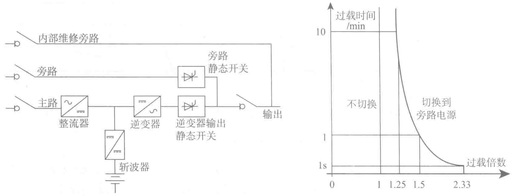

分负载，通常所带的负载低于额定值的50%或更低，这时尤其要注意UPS的效率，以匹配UPS设计带载率。需要说明的是，对标准的UPS，它的损耗不是同负载率成正比的，负载率减小到30%以下时，效率迅速下降。这是因为部分损耗是固定的，而在负载减小时，这部分所占的相对百分率增大。为了获得低负载率下的高效率，这部分固定的损耗必须控制得非常低。
（2）单机UPS容量的确定
对于一个双转换在线式UPS（参阅图3-10），其输出的过载曲线由右图所示。在逆变器发生故障或负载超过UPS的过载能力后，UPS自动切换到旁路交流输入。如果不能切换，UPS将以2.33In的峰值限流1s（对应的最大正弦波有效值电流为2.33/√2＝1.65In）；超过1s后，UPS停机。

下面举例来说明单机UPS额定容量的计算过程，这并不代表真实的情况，其目的是介绍UPS功率计算所需要的整个过程和步骤。
考虑下列三个并联连接的400V的三相负载：
- 计算机系统S1＝4×10kV·A（4个相同的10kV·A负载），所有的负载功率因数为PF＝0.6，每个负载的起动电流为8In并持续四个周期（50Hz，80ms）；
- 变频调速器S2＝20kV·A，功率因数为PF＝0.7，起动电流为4In并持续五个周期（50Hz，100ms）；
- 隔离变压器S3＝20kV·A，功率因数为PF＝cosφ＝0.8，起动电流为10In并持续六个周期（50Hz，120ms）。
稳态下的功率，负载吸收的视在功率和有功功率如表3-3所示。
1）UPS的额定视在功率
S＝54kW/0.68＝79.4kV·A
根据计算结果选择一台具有足够额定功率的UPS。如果该现场已经规划要增容，额定功率为80kV·A的UPS容量并不充裕，即应该选择额定功率为100kV·A或更大一级的UPS。